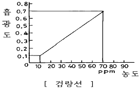
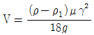
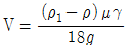
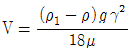
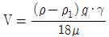
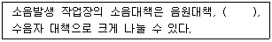
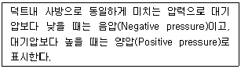

산업위생관리산업기사 (2004-03-07 기출문제)
1과목: 산업위생학 개론
1. 다음 중 직업성 경견완 증후군 발생과 연관되는 작업으로 가장 거리가 먼 것은?
- 전화교환작업
- 전기톱에 의한 벌목작업
- 키펀치작업
- 금전등록기의 계산작업
(정답률: 72%)

2. 작업을 수행하는데 필요한 직종간의 연결성, 공장설계에 있어서의 기능적 특성, 경제적 효율, 제한점등을 고려하여 세부설계를 하여야 하는 인간공학의 활용단계로 알맞는 것은?
- 준비단계
- 적용단계
- 선택단계
- 시행단계
(정답률: 34%)
3. 작업강도와 작업대사율의 범위가 잘못 이어진 것은?
- 중작업 4 - 7
- 경작업 0 - 1
- 중등작업 2 - 4
- 격심작업 7 이상
(정답률: 50%)
4. Vitamin D 생성과 가장 관계가 깊은 광선의 파장은?
- 280 - 320Å
- 280 - 320㎚
- 380 - 760Å
- 380 - 760㎚
(정답률: 53%)
5. 세계 최초의 직업성 암인 음낭암을 발견한 사람은?
- Georgius Agricola
- Bernardino Ramazzimi
- Pliny the Elder
- Percivall Pott
(정답률: 79%)
6. 질병발생의 요인을 제거하면 질병발생이 얼마나 감소될 것인가를 말해주는 위험도는?
- 상대위험도
- 절대위험도
- 비교위험도
- 기여위험도
(정답률: 알수없음)
7. 작업강도에 관한 설명으로 알맞지 않은 것은?
- 작업을 할 때 소비되는 열량으로 작업의 강도를 측정한다.
- 작업대사율로 주로 평가된다.
- 성별, 연령, 체격조건에 따라 큰 차이를 보인다.
- 대인접촉이 적고, 작업이 단순하며, 열량소비량이 많을 때 작업강도는 커진다.
(정답률: 65%)
8. 재해율의 종류중 도수율에 관한 설명으로 알맞지 않은 것은?
- 현재 재해발생의 빈도를 표시하는 표준 척도로 사용한다.
- 재해발생 건수의 산정은 응급처치 이상의 사고 모두를 포함한다.
- 재해발생건수 또는 재해자는 동일 개념으로 사용한다
- 재해의 강도 즉 재해의 경중이 고려된다.
(정답률: 알수없음)
9. 진폐증을 일으키는 분진과 가장 거리가 먼 것은?
- 유리규산
- 석면
- 시멘트
- 흑연
(정답률: 43%)
10. 산업피로에 관한 설명으로 알맞지 않은 것은?
- 고단하다는 객관적이고 보편적인 느낌이다.
- 작업강도에 반응하는 육체적, 정신적 생체현상이다.
- 피로 자체는 질병이 아니라 가역적인 생체변화이다.
- 피로가 오래되면 얼굴 부종, 허탈감의 증세가 온다.
(정답률: 63%)
11. 직업성 피부질환에 관한 설명으로 알맞지 않은 것은?
- 일반인에서는 발생되지 않는다.
- 발생빈도는 타질환에 비하여 월등히 많다.
- 생명에 큰 지장을 초래하지 않는 경우가 많다.
- 근로자 휴직일수의 5% 정도를 점유하는 질환이다.
(정답률: 16%)
12. 작업환경에서 식품과 영양소에 관한 설명중 틀린 것은?
- 단백질, 탄수화물, 지방, 무기질 및 비타민을 5대 영양소라 한다.
- 열량의 공급원은 탄수화물, 지방, 단백질이다.
- 칼륨은 치아와 골격을 구성하며 철분은 혈액을 구성한다.
- 신체의 생활기능을 조절하는 영양소에는 비타민, 무기질등이 있다.
(정답률: 알수없음)
13. 자유출퇴근(flex-time)제에 대한 설명중에서 틀린 것은?
- 인간소외문제를 해결
- 주당 일정시간을 작업하는 조건의 자유 출퇴근
- 개인생활의 편의 및 피로의 경감
- 출퇴근시 교통량의 완화
(정답률: 78%)
14. 산업위생의 영역에 관한 설명으로 틀린 것은?
- 노동의 생리학에 기초를 둔다.
- 작업장 외부의 환경관리를 위주로 한다.
- 심리학, 공학, 이학, 사회학 등과 협력한다.
- 산업사회의 질병을 퇴치하고 예방한다.
(정답률: 47%)
15. 근육노동을 하는 근로자가 특히 관심을 갖고 섭취해야 하는 비타민은?
- 비타민 A
- 비타민 B1
- 비타민 D
- 비타민 C
(정답률: 87%)
16. 화학적으로 원발성 접촉피부염을 일으키는 물질과 가장 거리가 먼 것은?
- 합성수지
- 용제
- 알카리
- 금속염
(정답률: 28%)
17. 다음 산업피로의 증상이 아닌 것은 무엇인가?
- 맥박이 빨라진다.
- 체온상승과 호흡중추의 흥분이 온다.
- 권태감과 졸음이 온다.
- 혈당치가 높아지고 혈중 젖산과 탄산량이 감소한다.
(정답률: 57%)
18. 전신피로의 정도를 평가하려면 작업종료 후 심박수(heartrate)를 측정하여 이용한다. 심한 전신피로상태로 판단되는 HR1(작업종료 후 30∼60초 사이의 평균맥박수), HR2(작업종료 후 60∼90초 사이의 평균맥박수), HR3(작업종료후 150∼180초 사이의 평균맥박수)의 기준조건으로 알맞는 것은?
- HR1이 110 미만이고 HR2와 HR3의 차이가 10이상인 경우
- HR1이 100 미만이고 HR3 와 HR2 의 차이가 15이상인 경우
- HR1이 110을 초과하고 HR3 와 HR2 의 차이가 10미만인 경우
- HR1이 100를 초과하고 HR2와 HR3의 차이가 15미만인 경우
(정답률: 60%)
19. 미국국립산업안전보건연구원(NIOSH)에서는 중량물 취급작업에 대하여 두가지 권고치, 즉 감시기준(AL)과 최대허용기준(MPL)을 설정하였다. 이 두가지 기준의 관계를 설명한 것 중 바른 것은?
- MPL = 2 × AL
- MPL = 3 × AL
- MPL = 4 × AL
- MPL = 5 × AL
(정답률: 79%)
20. 독일에서 근로자 질병보험법(1883)과 공장재해보험법(1884)을 제정한 사람은?
- Bismark
- Rudolf Virchow
- Max von Pettenkoffer
- Villerme
(정답률: 7%)
2과목: 작업환경측정 및 평가
21. 산업위생 통계 자료 표에서 M ± SD 로 표시한 것은 무엇을 의미하는가?
- 평균치와 표준편차
- 평균치와 표준오차
- 최빈치와 표준편차
- 중앙치와 표준오차
(정답률: 72%)
22. 작업환경 측정기구의 보정을 위한 2차표준에 해당되는 것은?
- Wet-test meter
- 비누거품미터
- Pitot 튜브
- '무마찰'피스톤 미터
(정답률: 60%)
23. 작업장내 소음을 측정시 소음계의 특성을 아래에 어떤 특성에 맞추어 작업자의 폭로수준을 평가 하는가?
- A
- B
- C
- D
(정답률: 62%)
24. 호흡성 유리규산을 채취할 때 가장 적합한 방법은?
- 1.7 Lpm의 유량으로 10-mm nylone cyclone을 사용
- 1.7 Lpm의 유량으로 PVC 여과지에 채취
- 2.0 Lpm의 유량으로 MCE 여과지에 채취
- 2.0 Lpm의 유량으로 유리섬유여과지에 채취
(정답률: 27%)
25. 직경이 15센티미터인 흑구온도계의 측정시간으로 적절한 기준은?
- 15분 이상
- 20분 이상
- 25분 이상
- 30분 이상
(정답률: 36%)
26. K2Pd(SO3)2로 처리된 가스검지관은 어떤 물질 측정용인가?
- CO
- CO2
- 6가 크롬
- Cl2
(정답률: 29%)
27. 다음 중 가스검지관의 특징의 설명으로 틀린 것은?
- 사용이 간편하다.
- 반응시간이 빠르다.
- 민감도가 높다.
- 특이도가 낮다.
(정답률: 38%)
28. 활성탄, 실리카겔 등과 같은 흡착제를 사용하여 공기중 유기용제 증기를 채취하는 방법은?
- 액체포집방법
- 고체포집방법
- 여과포집방법
- 직접포집방법
(정답률: 48%)
29. 작업장내의 조명상태를 조사하고자 할때 측정해야 되는 기본 항목에 포함되지 않는 것은?
- 조명도
- 흡광도
- 휘도
- 반사율
(정답률: 25%)
30. 흡광광도법으로 시료용액의 흡광도를 측정한 결과 흡광도가 검량선의 영역 밖이었다. 시료용액을 2배로 희석하여 흡광도를 측정한 결과 흡광도가 0.5였다. 이 시료용액의 농도는?

- 30ppm
- 50ppm
- 80ppm
- 100ppm
(정답률: 32%)
31. 액체포집방법으로 시료를 채취하는 경우, 주의사항에 관한 설명이다. 적합하지 않은 것은? (단, 가스,증기 포집, 포집=채취 )
- 유기용제 등의 휘발성물질은 흡수액의 온도가 낮을 수록 포집효율이 좋아진다.
- 포집효율을 높이기 위해 흡수관을 2본 병렬로 사용하는 것이 좋다.
- 포집기구는 종류에 따라 포집효율이 다르다.
- 포집효율을 높이기 위해서는 시료공기와 흡수액과의 접촉면적을 크게하는 것이 좋다.
(정답률: 38%)
32. 납이 발생되는 공정에서 공기 중 납 농도를 측정하기 위해 공기시료를 0.550m3 채취하였다. 납을 채취한 시료를 10 mL의 10% HNO3에 용해시켰다. 원자흡광분석기를 이용하여 시료중 납을 분석하였고 검량선과 비교한 결과 시료 용액중 납의 농도는 23μg/ml로 나타났다. 채취한 시간 동안의 공기중 납의 농도(mg/m3)는?
- 0.24
- 2.4
- 0.42
- 4.2
(정답률: 34%)
33. 작업환경측정의 정확도는 시료 포집시간과 시료수에 따라 달라진다. 다음 시료포집법 중 오차가 가장 낮은 방법은?
- 단시간 단일 시료포집법
- 전 작업시간 단일시료 포집법
- 전 작업시간 연속시료 포집법
- 부분적 연속 시료포집법
(정답률: 45%)
34. 휴대용 Gas chromatography의 검출기 중 불꽃이온화검출기의 적용조건과 특성에 관한 설명으로 틀린 것은?
- 큰 범위의 직선성
- 낮은 민감성
- 비선택성
- 보조가스(공기나 수소)필요
(정답률: 37%)
35. 공기 중 방향족 아민류의 시료채취에 가장 적합한 채취매체는?
- 실리카겔관
- 5μm 공극의 PVC 여과지
- 활성탄관
- XAD-2 흡착관
(정답률: 알수없음)
36. 분진의 직경 중 먼지의 한쪽 끝 가장자리와 다른 쪽 가장자리 사이의 거리로서, 실제의 분진 직경보다 크게 과대평가될 수 있는 것은?
- 등면적직경
- Feret 직경
- Martin 직경
- 공기역학적직경
(정답률: 65%)
37. 다음 설명중 지시약이 갖추어야 할 조건으로 틀린 것은?
- 산, 알칼리성에서 변색해야 한다.
- 변색은 예민해야 한다.
- 변색범위가 넓어야 한다.
- 변화가 가역적이어야 한다.
(정답률: 30%)
38. 1일 8시간 도장작업하는 근로자에게 톨루엔의 농도가 3시간동안 75ppm, 2시간동안 95ppm, 1시간동안 100ppm, 1시간동안 110ppm 으로 노출되고 나머지 시간은 노출되지 않았다. 톨루엔의 시간 가중 평균 농도는 몇 ppm인가?
- 78
- 82
- 86
- 90
(정답률: 27%)
39. 100g의 물에 20g의 Nacl을 가하여 용해시키면 몇%(W/W)의 Nacl용액이 만들어 지는가?
- 20.0%
- 16.7%
- 14.5%
- 10.9%
(정답률: 57%)
40. 어떤 작업환경 중에 carbon tetrachloride(TLV = 10ppm) 6ppm, 1.2dichloroethane (TLV = 50ppm) 20ppm, 1.2dibromoethane(TLV = 20ppm)5ppm이 함유되어 있을 때 이 혼합물의 허용농도는? (단, 상가작용 기준)
- 20.4ppm
- 22.5ppm
- 24.8ppm
- 28.9ppm
(정답률: 42%)
3과목: 작업환경관리
41. 공기중에 발산된 분진입자는 중력에 의하여 침강하는데 stoke식이 많이 쓰이고 있다. stoke종말침전속도 식으로 맞는 것은? (단, ρ1 : 먼지밀도, ρ : 공기밀도, μ : 공기의 동점성계수, γ : 먼지직경, g : 중력가속도 )




(정답률: 47%)
42. 1룩스(Lux)의 정의는 무엇인가?
- 1루멘의 빛이 1ft2의 평면상에 수직방향으로 비칠때의 밝기
- 1루멘의 빛이 1㎝2의 평면상에 수직방향으로 비칠때의 밝기
- 1루멘의 빛이 1m2의 평면상에 수직방향으로 비칠때의 밝기
- 1루멘의 빛이 1in2의 평면상에 수직방향으로 비칠때의 밝기
(정답률: 49%)
43. 전자파 방사선은 보통 진동수나 파장에 따라 전리방사선과 비전리방사선으로 분류한다. 다음 중 전리방사선은?
- 자외선
- 마이크로파
- 라디오파
- X선
(정답률: 75%)
44. 혈중 염소농도가 현저히 감소하며 혈액농축이 현저한 열중증 질환은?
- 열경련
- 열피로
- 열쇠약
- 열사병
(정답률: 50%)
45. 다음 중 마이크로파의 생체작용과 거리가 먼 것은?
- 열작용
- 백내장
- 색소침착
- 생식기능상 장해
(정답률: 19%)
46. 고압환경에서 발생되는 2차적인 가압현상(화학적장해)에 해당되지 않는 것은?
- 일산화탄소의 작용
- 질소의 작용
- 이산화탄소의 작용
- 산소중독
(정답률: 40%)
47. 진폐증중 폐결핵을 합병증으로 폐하엽부위에 많이 생기는 것은?
- 면폐증
- 규폐증
- 석면폐증
- 용접폐증
(정답률: 60%)
48. 감쇠가 거의 없고 공진시에 전달율이 매우 크며 고주파진 동시에 단락되나 최대변위가 허용되는 방진재료는?
- 방진고무
- 금속스프링
- 코르크
- 공기스프링
(정답률: 57%)
49. 다음의 조건중 방진마스크의 선정기준에 들어 있지 않는 것은?
- 무게가 가벼울 것
- 시야가 넓을 것
- 흡기 저항이 클 것
- 포집효율이 높을 것
(정답률: 54%)
50. 전리방사선의 단위에 관한 내용과 가장 거리가 먼 것은?
- R : 조사선량 단위
- Ci : 방사성물질의 량
- ㎭ : 흡수선량 단위
- IR : 생체실효선량 단위
(정답률: 42%)
51. 벤젠의 생물학적폭로지표로 이용되는 물질은?
- 페놀
- 마뇨산
- 만델린산
- 메틸마뇨산
(정답률: 47%)
52. 공기중의 SO2와 HCN과 같이 반응양상이 다른 유해물질이 일으키는 작용은?
- 길항작용
- 상가작용
- 독립작용
- 상승작용
(정답률: 48%)
53. 전신진동이 주로 문제가 되는 주파수의 범위를 가장 바르게 나타낸 것은?
- 2 - 90㎐
- 8 - 1500㎐
- 250 - 3000㎐
- 125 - 1000㎐
(정답률: 15%)
54. 전신진동이 발생하는 작업으로 가장 적절한 것은?
- 함마작업
- 연마작업
- 전기톱작업
- 버스운전작업
(정답률: 50%)
55. 청력보호구의 차음효과를 높이기 위한 내용으로 틀린 것은?
- 귀덮개 형식의 보호구는 머리카락이 길 때와 안경테가 굵거나 잘 부착되지 않을 때에는 사용하지 않는다.
- 청력보호구를 잘 고정시켜서 보호구 자체의 진동을 최소한으로 한다.
- 청력보호구는 다기공의 재료로 만들어 흡음효과를 최대한 높이도록 한다.
- 청력보호구는 머리의 모양이나 귓구멍에 잘 맞는 것을 사용한다.
(정답률: 50%)
56. ( )안에 알맞은 내용은?

- 발생원의 제거대책
- 전파경로대책
- 방음보호구
- 방진대책
(정답률: 43%)
57. 열사병(heat stroke)이 발생했을 때 가장 적절한 응급처치 방법은 ?
- 통풍이 잘 되는 서늘한 곳에 눕히고 포도당 주사를 준다.
- 생리식염수를 정맥주사하거나 0.1% 식염수를 마시게 한다.
- 얼음물에 몸을 담가서 체온을 39℃이하로 유지 시켜준다.
- 스포츠 음료나 설탕물을 마시게 한다.
(정답률: 42%)
58. '비교원성진폐증'에 관한 내용으로 알맞는 것은?
- 폐포조직이 비가역성변화나 파괴가 있다.
- 간질반응이 명백하며 그 정도가 심하다.
- 망상섬유로 구성되어 있다.
- 규폐증, 석면폐증이 대표적인 예이다.
(정답률: 39%)
59. 직업성 피부질환에 영향을 주는 간접적인 요인과 그에 대한 설명으로 알맞지 않는 것은?
- 연령 : 젊은 근로자들이나 일에 미숙한 근로자일수록 직업성 피부질환이 많이 발생하는 경향이 있다.
- 피부의 종류 : 지루성 피부는 비누,용제,절삭유등의 자극에 민감한 것으로 알려져 있다.
- 땀 : 과다한 땀의 분비는 땀띠를 유발하며 이는 2차적 피부감염을 유발하기도 한다.
- 인종 : 인종에 큰 차이는 없는 것으로 알려져 있다.
(정답률: 44%)
60. 작업환경개선 대책 중 대치의 방법으로 틀린 것은?
- 금속제품 도장용으로 유기용제를 수용성 도료로 전환한다.
- 아소염료의 합성에서 원료로 디클로로벤지딘을 사용하던 것을 벤지딘으로 바꾼다.
- 분체의 원료는 입자가 큰 것으로 바꾼다.
- 금속제품의 탈지에 트리클로르에틸렌을 사용하던 것을 계면활성제로 전환한다.
(정답률: 36%)
4과목: 산업환기
61. 송풍기의 풍량 조절방법이라 할 수 없는 것은?
- 원동기의 회전수 조절
- 안내익(vane)의 조절
- 댐퍼를 부착 조절
- 익근 출구 각도 조절
(정답률: 27%)
62. 다음은 무엇에 대한 설명인가?

- 전압
- 정압
- 동압
- 속도압
(정답률: 36%)
63. 수공구에 부착하는 저유량-고유속 후드의 단점과 가장 거리가 먼 것은?
- 운전비용이 크게 상승한다
- 소음이 크다
- 덕트 마모가 심하다
- 정전기가 발생한다
(정답률: 40%)
64. 크실렌(xylene)이 1000 ppm인 경우 유효비중은 얼마인가? (단, 크실렌의 비중은 3.7이라 가정함)
- 1.0027
- 1.0037
- 1.0047
- 1.0⑤7
(정답률: 16%)
65. 중력집진장치에서 효율을 향상 시키는 방안이 아닌 것은?
- 처리가스 속도를 작게 한다.
- 수평 도달거리를 길게 한다.
- 침강실내의 배기 기류를 균일하게 한다.
- 침강 높이를 크게 한다.
(정답률: 50%)
66. 작업장의 국소환기 전체의 압력손실이 200mmH2O이고, 송풍기의 총 공기량이 100,000m3/hr일 때 소요동력은? (단, 송풍기효율 70%, 안전인자 30%)
- 80kW
- 85kW
- 91kW
- 101kW
(정답률: 20%)
67. 원심력송풍기 중 후향 날개형 송풍기에 관한 설명으로 틀린 것은?
- 회전날개가 회전방향 반대편으로 경사지게 설계되어 있어 충분한 압력을 발생시킬 수 있다.
- 방사날개형, 전향 날개형에 비하여 효율이 좋다.
- 고농도 분진함유 공기 이송시에 집진기 전단에 설치한다.
- 송풍량이 증가해도 동력이 증가하지 않는다.
(정답률: 39%)
68. 국소배기장치에서 조용한 대기중에 거의 속도가 없는 상태로 발산하는 가스, 증기, 흄등을 제거하기 위한 적정제어속도는 얼마인가?
- 0.25∼0.5㎧
- 0.5∼1.0㎧
- 1.0∼2.0㎧
- 2.0∼3.5㎧
(정답률: 43%)
69. 용해로가 있는 작업장에 환기를 위해 자연환기를 실시하고자 한다. 작업장 상부에 자연환기구가 설치되어 있고, 창문은 항상 열려있다면, 다음 중 가장 높은 환기효율을 기대할 수 있는 계절은? (단, 풍속 및 풍향은 동일하다고 가정)
- 봄
- 여름
- 가을
- 겨울
(정답률: 46%)
70. 국소 배기의 압력을 나타내는 수주(㎜H2O)는 대기의 기압(760㎜Hg)을 기준으로 하여 표현한다. 대기 1기압에서 수주는?
- 10336㎜H20
- 10421㎜H20
- 1⑤12㎜H20
- 10621㎜H20
(정답률: 43%)
71. 직경이 20㎝인 새우등 연결곡관을 설치하려 한다. 새우등 수는 몇개 이상으로 하는 것이 좋은가?
- 2개
- 3개
- 4개
- 5개
(정답률: 82%)
72. 직경이 2㎛ 이고 비중이 6.6인 산화철 흄(Fume)의 침강속도는?
- 약 0.02 cm/sec
- 약 0.04 cm/sec
- 약 0.08 cm/sec
- 약 0.16 cm/sec
(정답률: 47%)
73. 송풍기에 대한 다음 설명 중 틀린 것은?
- 송풍기 중에서 장소의 제약이 없고 효율이 좋은 송풍기는 평판송풍기이다.
- 동일 풍압을 발생시키기 위해서는 송풍기의 주속도를 다익, 평판, 터보의 순으로 빨리 해야 한다.
- 풍압이 바뀌어도 풍량의 변화가 비교적 작은 것은 터보형 송풍기이다.
- 다익 송풍기는 효율이 낮아 큰 마력의 용도에는 사용되지 않는다.
(정답률: 53%)
74. 시멘트, 미분탄, 곡물, 모래 등의 고농도 분진이나 마모성이 강한 분진 이송용으로 일반적으로 사용되는 원심력 송풍기는?
- 프로펠러 송풍기
- 전향 날개형 송풍기
- 후향 날개형 송풍기
- 방사 날개형 송풍기
(정답률: 22%)
75. 오염이 높은 작업장의 실내압으로 알맞는 것은?
- 양압(+) 유지
- 음압(-) 유지
- 정압 유지
- 동압 유지
(정답률: 67%)
76. 유기용제 등의 부식이나 마모의 우려가 없는 곳에서 사용되는 송풍관 재료로 가장 적절한 것은?
- 스테인레스 강판
- 경질 염화 비닐판
- 아연도금 강판
- 흑피강판
(정답률: 47%)
77. 직경이 120㎜인 덕트내에 10㎧의 유속으로 기체가 흐른다. 이 기체의 동점성계수(ν)가 1.5×10-5m2/s 이라면 난류의 정도를 나타내는 Reynold number는?
- 160,000
- 80,000
- 40,000
- 20,000
(정답률: 57%)
78. 다음 중 후드가 갖추어야 할 사항과 거리가 먼 것은?
- 가능한한 오염물질 발생원에 가까이 설치한다.
- 제어속도는 빠를수록 좋다.
- 작업에 방해되지 않도록 설치하여야 한다.
- 오염물질 발생특성을 충분히 고려하여 설계하여야 한다.
(정답률: 58%)
79. 용해로에 레시버식 캐노피형 국소배기장치를 설치한다. 열상승기류량 Q1은 30m3/min, 누입한계유량비 KL은 2.5이라 할 때 소요송풍량은? (단, 난기류가 없다고 가정함)
- 45(m3/min)
- 65(m3/min)
- 75(m3/min)
- 1⑤(m3/min)
(정답률: 15%)
80. 유해가스 처리법중 회수가치가 있는 불연성 희박농도가스의 처리에 가장 적합한 것은?
- 촉매산화법
- 연소법
- 침전법
- 흡착법
(정답률: 58%)